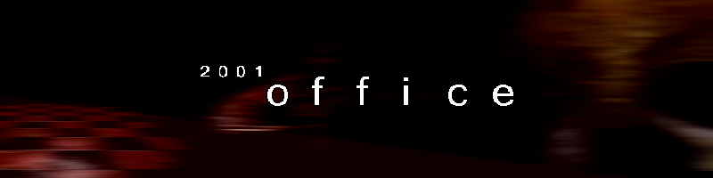
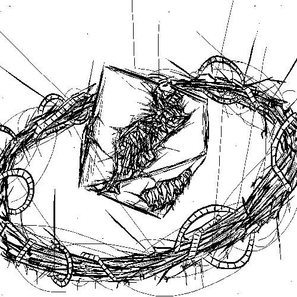
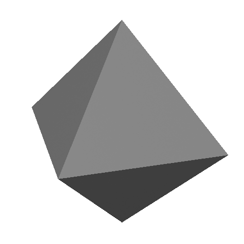

about 2001office

[ awaiting rewrite ]
anomaly effect
the void is considerably an anomaly to reality itself. any death that occurs within it will somehow result in the person being brought back outside of the void. attempts to establish a connection between the overworld and the void may also cause unusual effects. this applies to pretty much any form of communication, including videos, recordings, video calls, phone calls, and other similar methods. these are often altered in ways that don't seem to have any clear explanation.
voidhost

center/core of the void, acts as the main anchor. it was the first thing created by structor #2001, taking the physical shape of a damaged diamond roughly the size of jupiter. anything that gets too close to it would eventually be crushed or destroyed due to the unusual gravitational forces surrounding it. it is indestructible.
structor #2001

it is a cursed object originally defined as a tool for creation on a dimensional scale. in order to activate and use it, the user must hold and grip it tightly. the object is considered indestructible due to the way it was materialized. the only known case of it ever being damaged was when it was used by someone powerful enough to do so. it was later locked after that one time use, making it completely unusable to anyone else from that point onward.